We are Azalin, or Azalinworks. Originally founded in 2017, we are a bunch of nerds who came together with a passion for telling stories and surpassing the limits of what visual novels have been defined as. Below, you can find a short introduction from each of us.
Team Members
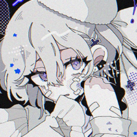
ALTRIAS
ROLE: CREATOR, MAIN SCENARIO WRITER, CHARACTER ARTIST/DESIGNER, CG ART, BACKGROUND ART, GUI, LEADER | PFP CREDIT: @xxx_666__x
Hi, I'm ALTRIAS! I'm the everything person behind Azalinworks. I don't have much to say for myself on my website, you'll have to find out more about me naturally. I have done many things in my lifetime, but that's for another time. Smile! Here are my socials. Let me introduce the rest!


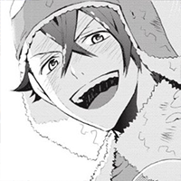
BRIMBEL
ROLE: ASSISTANT WRITER, PROGRAMMER, CO-LEADER/CREATOR
Brimbel! He's why Azalin VNs look so nice. Special interests include web games that are probably older than you. He's worked on other VN projects such as Amorous Ursidae's ENONOIA series.
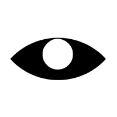
BISONEET
ROLE: ASSISTANT ARTIST
Bisoneet! This is my splendid assistant artist. They're very good at what they do! Check out their silly smiling witch girl.
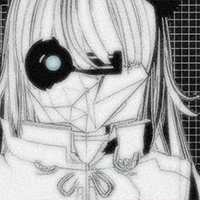
ARCHANGEL VARYEL
ROLE: MUSICIAN
This is my wonderful, beautiful musician friend Varyel. They're on a quest to become Trent Reznor 2, and I hope they succeed. Check out their music and give them some love!

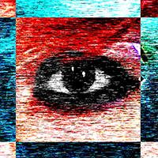
ERIN MOROSE
ROLE: MUSICIAN
My other amazing musician friend, Erin Morose! She's very talented, and most notably did a vocal track for di/aphragm para/digHm! Check out her other work!
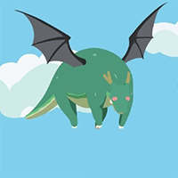
GRABER
ROLE: PUBLISHER/MARKETING
Graber! You may know him as the REFINT/GAMES guy, which he is! He is currently their main programmer, and works on console ports for video games.
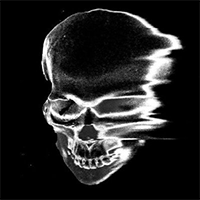
MERRICK
ROLE: 3D ARTIST
Merrick! He knows 3D modelling very well, and was the sole 3D artist behind di/aphragm para/digHm. You should commission him so he can buy more guitars!
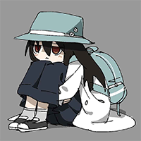
ADE
ROLE: PROOFREADING/TESTING
Ade! Azalin's himejoshi. That's all.
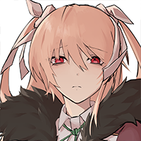
NAGI
ROLE: PROOFREADING/TESTING
Nagi. One of the people that helps make sure Azalin VNs aren't released with a thousand bugs. They're the writer of On a First-Name Basis with the Dead, which you should check out!
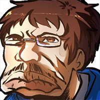
NICK
ROLE: VOICE DIRECTOR
Nick. Does voice stuff! Directs voice stuff!
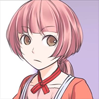
RIGS
ROLE: PROOFREADING/TESTING
Rigs. Helps with bug testing and stuff! Also a core person on the Committee of Zero, so go check that out if you're interested in the SciADV series.
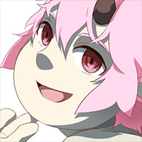
AIYUU
ROLE: ADDITIONAL ART/PROOFREADING/TESTING
Aiyuu! Or Sobu...he helps with bugtesting and draws the Caelumverse's animals. Check out his group Amorous Ursidae!
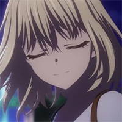
YUKI
ROLE: CASTING DIRECTOR/VOICE DIRECTOR
Yuki! A great friend of mine with a million jobs outside of this one. They're also working with refint/games, and have their hands in many other projects.
And that's everyone! There are some people working in the shadows...and who knows! Maybe you'll end up on this page some day!~ (｡•̀ᴗ-)✧


From Azalin, with love. ♡
2024 Azalinworks©